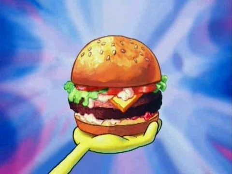

Krabby Patty

Description
This is Bikini Bottom's most desired delicacy.
Sold by the infamous Mr.Krabs and made by the ocean's
greatest chef--Spongebob Squarepants
Let it be known that the evil Plankton is trying
to steal the recipe since its inception. You can place your order
with Squidward.
Ingredients
- Krabby Patty Secret Formlia(Sorry, this is top secret!)
- Krabby Patty buns
- Krabby Patty meat(your choice of beef, veggie, or your secret ingredient)
- Fresh lettuce
- Sliced tomatoes
- Pickles
- Ketchup
- Mustard
- Onions(grilled or raw, depending on preference)
- Cheese(optional)
- Love(the most crucial ingredient)
Steps
- Assemble all the ingredients in your secret Krabby Patty laboratory. Make sure you have the Krabby Patty Secret Formula on hand.
- Shape your secret ingredient into Krabby Patty-sized patties. If using beef, season it with a touch of imagination and a sprinkle of hum
- Cook the patties to perfection. Imagine the sizzle and aroma filling your kitchen, just like at the Krusty Krab.
- Toast the Krabby Patty buns until they're golden brown. This step is crucial for achieving that perfect Krabby Patty texture.
- Now comes the fun part! Assemble your Krabby Patty with the love and care only a true Krusty Krab chef can provide.
- Layer the fresh lettuce, sliced tomatoes, pickles, onions, and cheese (if using) on top of the patty. Each ingredient contributes to the unique flavor of the Krabby Patty.
- Add ketchup and mustard in just the right amounts. Remember, the secret is in the balance of flavors!
- Plate your Krabby Patty with a big, friendly smile. Presentation matters when you're creating a culinary masterpiece.
- Sit back, relax, and savor the deliciousness of your homemade Krabby Patty. Feel the joy and satisfaction of mastering the art of Krabby Patty perfection.
Home Page